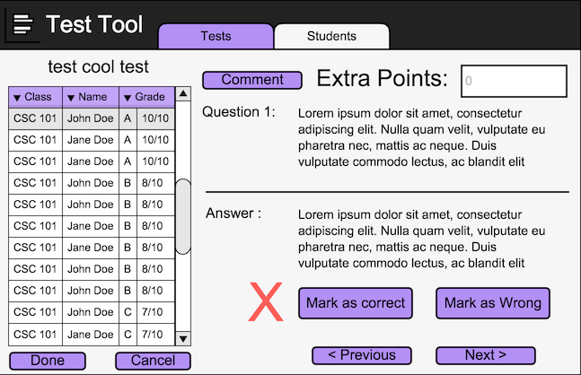

The far left shows a list of students who took the test. The left column starts with no students selected. The left column shows the class of the student. The next row to the right shows the students name. One more column over displays the students letter grade. The last column will show the score of the students test.
The open space on the right shows general information about the test. The top row shows
the average score on the test. The next row displays the average grade. The last row
allows the teacher to apply an overall curve to the test. The text field holds a greyed out
zero. When the instructor selects the text field with the mouse and enters a numerical curve value
all the scores in the student list will be updated.
Figure 1: Test Editing With No Selection.
Underneath the student list the software presents two buttons. Done and Cancel. Both buttons will return the instructor to the screen of figure two. The main difference between the two buttons is that Done will save the grading changes. The Cancel button will not save the changes.
The rest of the screen functions the same as the edit screen outlined in the student directory edit section

Figure 2: Selected Student.
The screen usage is the same as outlined in the student directory comment section
Figure 3: Test Comments.